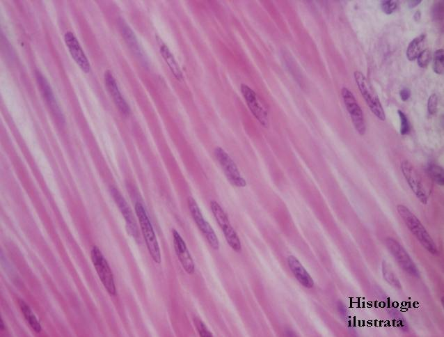
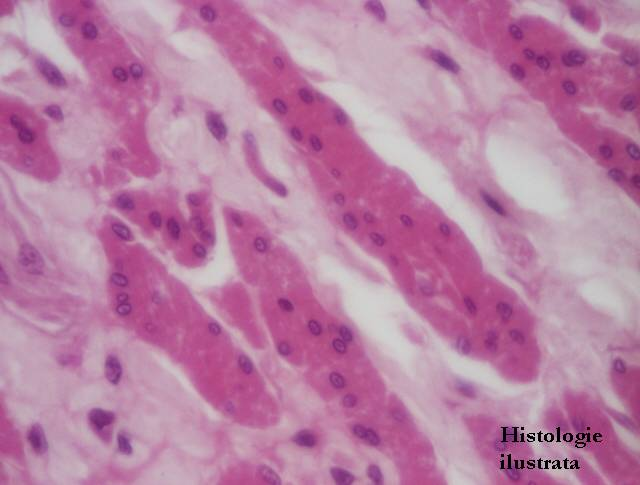
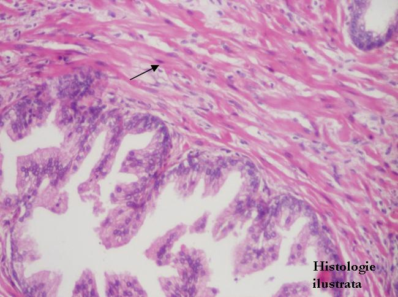
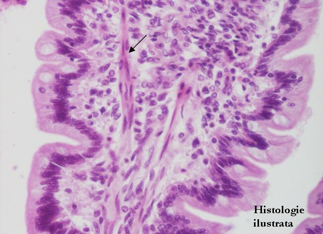
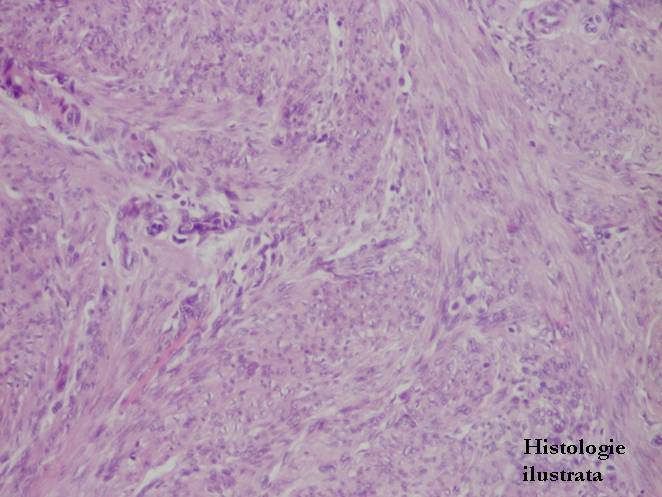
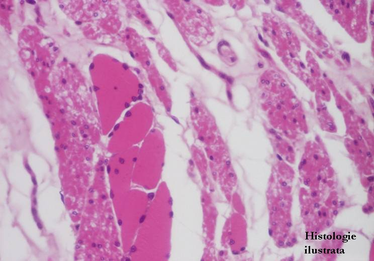

Chap.3 - Tissu musculaire
3.3. Tissu musculaire lisse




Fig. 130 - Fibres musculaires lisses – coupe longitudinale, jéjunum, H.E. X 200
Fig. 131 - Fibres musculaires lisses – coupe longitudinale, H.E. X 400
Fig. 132 - Fibres musculaires lisses – coupe transversale, œsophage, H.E. X 200
Fig. 133 - Fibres musculaires lisses – coupe transversale, H.E. X 400






Fig. 134 - Fibres musculaires lisses dans le stroma de la prostate –
H.E. X 200
Fig. 135 - Fibres musculaires lisses dans le chorion de la villosité intestinale (muscle de Brücke) - jéjunum,
H.E. X 200
Fig. 136 - Faisceau de fibres musculaires lisses – muscle arrecteur du poil,
H.E. X 100
Fig. 137 - Fibres musculaires lisses à disposition en couches - jéjunum, H.E. X 200




Fig. 138 - Fibres musculaires lisses à organisation plexiforme – vessie,
H.E. X 100
Fig. 139 - Fibres musculaires lisses à organisation plexiforme – myomètre, H.E. X 40
Fig. 140 - Tissu musculaire strié et tissu musculaire lisse – tiers moyen de l'œsophage, H.E. X 400